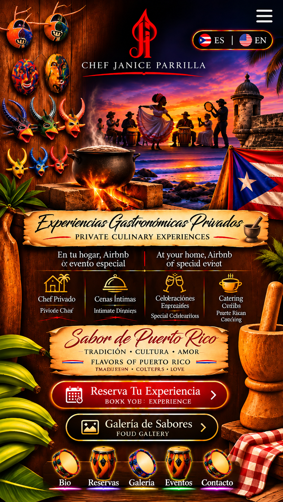
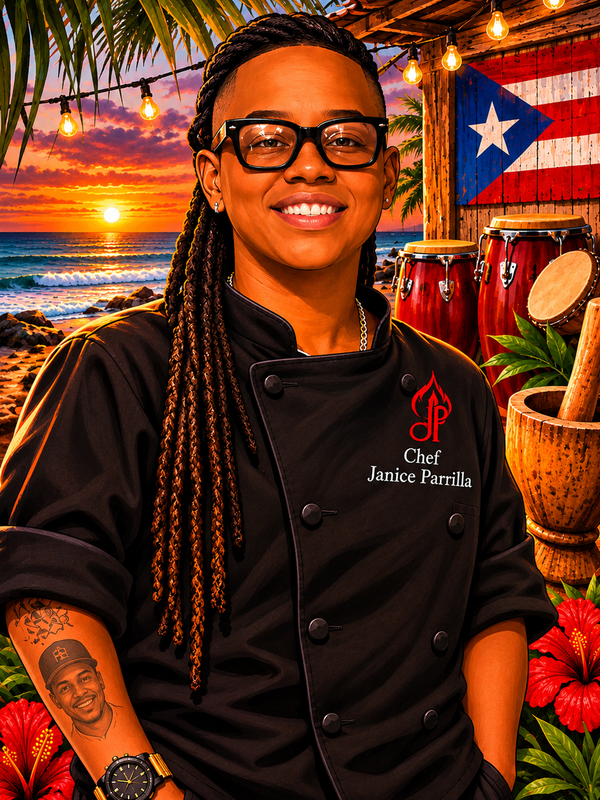

Chef Janice Parrilla

Mi Historia | My Story
Welcome to my kitchen! My passion for cooking comes from my Puerto Rican roots, our traditions, and the memories created around food.
Through private chef experiences and catering, I bring the flavors of Puerto Rico to your home, vacation rental, or special celebration.
For me, cooking is more than preparing a meal. It is about sharing culture, creating memories, and cooking with love.
Con mucho amor y sabor,
Chef Janice Parrilla
Reservations
Let's create a memorable culinary experience!
Contact Chef Janice to discuss your private dinner, catering, or special celebration.
Gallery
Explore Chef Janice's culinary creations and experiences.
Events
Contact Chef Janice
Get in touch to plan your next culinary experience.